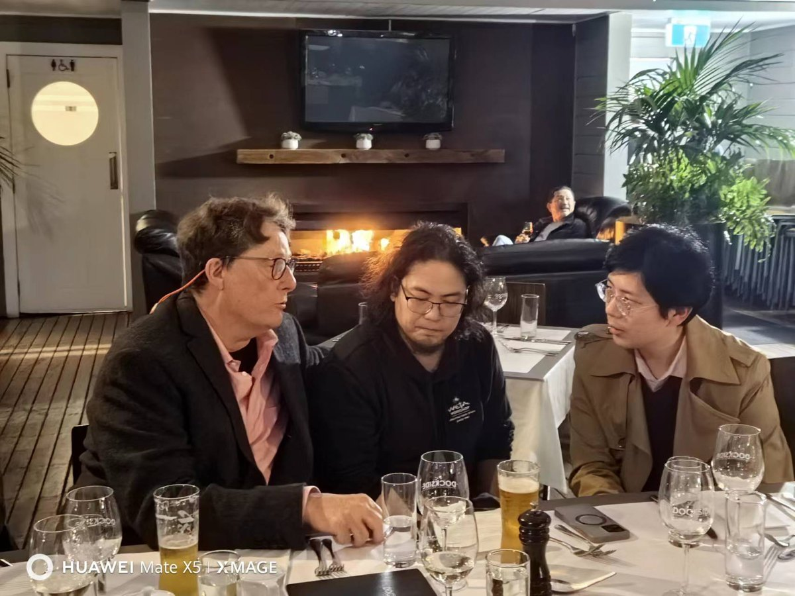

奥克兰大学 · 导师： Jiamou Liu
AI 心电图分析、多支冠脉缺血检测与血流储备分数预测。
新西兰 · 奥克兰
AI 研究者、开发者与教育者。
我探索智能系统如何依据证据推理、解决真实问题并支持人的成长。我的工作连接学术研究、工程实践与共同学习的社群。
奥克兰大学 · 计算机科学博士在读
Civilised Agent Lab · ORCID · GitHub

我喜欢先定义问题，再选择解决方案。
拿到任务时，我先问：我们究竟想弄清什么？什么结果会改变下一步的决定？我喜欢把一个领域的方法带到另一个领域，从认知心理学到机器学习，从学术研究到日常软件。
当事情效果不好时，我习惯沿着过程追溯，定位瓶颈，再用相同材料验证改动。合作中，我重视明确的分工和实际结果，尤其喜欢将模糊需求转化成真正可用的系统。
我常驻奥克兰，希望通过研究、教学和社群认识合作伙伴。除了 AI，心理学与个人成长也是我长期关注的方向。
奥克兰大学 · 导师： Jiamou Liu
AI 心电图分析、多支冠脉缺血检测与血流储备分数预测。
奥克兰大学 · 一等荣誉 · 硕士论文 A+
机器学习、海量数据算法、数据挖掘与软件开发。
山东理工大学 · 软件开发与系统设计。
印度 Vellore Institute of Technology。
连接模型学习到的表示、显式知识与人类判断。
我的博士课题研究 AI 心电图分析、多支冠脉缺血检测与 FFR 预测。目前探索如何将指南条件写成可检验的规则，通过控制证据变化审计模型是否依赖这些诊断依据。
我清洗数据、设计并实现融合模型，并参与了论文写作。团队使用 UK Biobank 数据开展实验，并用成都的数据做外部验证。
价值观表达、基于证据的辩论生成及 AI 同行评审的可靠性。
基于原型的人格推断与视觉叙事中的人格一致性。
连接交易网络、市场信号与在线讨论，预测行为和价格。

参与 ARR、AAMAS 和 Information Fusion审稿；AAMAS 2024 志愿者；2024 年访问电子科技大学。
已发表论文、预印本及投稿研究，附个人贡献。
先理解实际工作流程，再判断哪些环节需要程序、模型推理或人工判断。
原流程估算耗时与重构后同批文档的实际运行时间对比。
为律师独立构建 OCR 转 Markdown 流水线，包括文档专用 Skill、并行抽取、向量检索与带原文引用的问答。
跨行业研究 102 个 AI 应用案例，归纳为 16 个业务分类、6 类应用模式及 7 步实施方法。
探索案例库 ↗搭建 Obsidian 知识库，通过 Telegram 接入可远程调用的 Hermes 助手，支持知识复用与内容创作；持续完善知识摄取流程。
构建涵盖超过 3 亿条以太坊交易和 3,880 个代币档案的多源数据与基准设施。WWW 2026 短文第一作者。
阅读论文 ↗设计并部署时序图神经网络，用于投资者行为建模与风险评分。项目覆盖超过 100 万用户，后来暂停。
项目仓库 ↗将带教经验转化为可复用 AI 指导、播后复盘与自动视频剪辑，并搭建用于日常问答和复盘的对话界面。
了解 ChanCard ↓— 规划分期内容管理、排期及多工作区方案。
— 设计报名及人工分组流程。
— 探索移动端发布交接与照片生成文案。
— 参与业务策划。
理解人，与理解系统同样重要。
大学起，我跟随 Time Line 创始人学习精神分析理论，观察引导实践，并探索自我反思与放松方法。
2025 年底，我创立 ChanCard，用象征性卡牌开启对话，让参与者从一张图谈到自己的经历、感受和选择。
这种兴趣也影响我的学术研究，包括人格推断中的原型理论，以及视觉叙事的人格一致性。
自我理解、独立与个人责任。
通过教学、交流和亲手实践，让 AI 更容易被理解和使用。

Horizon Youth 青年 AI 公社组织者及 AI 主讲。截至 2026 年 11 月，每周 AI 活动已至第 15 期；公社累计举办 30 多场活动，估计参与超过 400 人次。
主题包括模型认知、ChatGPT 与 Codex、Vibe Coding、AI 伦理、营销及产品落地。

获提名参加新西兰国会为期一周的青年领导力论坛，并分享科研经历与融入当地文化的生成式 AI 实践。

共同设计并讲授成人 AI 实践课程，涵盖知识库、智能体及工作流自动化。
经导师介绍，我受邀向当地教师分享 AI 与科研方法。
我与北辰青年合作，为已有自己事业的成人学员讲授知识库与助手自动化课程。
我主讲营销，和产品、人力资源两位讲者同台。我们从客户获取信息的方式谈起，用配方知识库、创意视频和营销数据说明 AI 在具体工作中的用途。


科研、教学、产品交付与独立创业。
共同设计并交付 AI 课程与工作坊，参与面向客户的数字化解决方案及 AI 项目。
文档智能、个人知识系统、工作流设计与工程实现。
每期指导约 3–5 名西南大学来访学生。2026 年，我用 UK Biobank 数据设计机器学习课题，带学生完成模型训练，小组获得当期一等奖。
为约 40 名本科生批改每周作业并提供反馈。
大二暑假在酒店做前台时，我发现存酒标签常和纸本记录对不上，便向老板提议，独立开发了存酒管理系统。

受新西兰美股集团创始人路易李委托，我独立接待东方影都董事长孙恒勤，并陪同他与 Sir Richard Taylor 会面。